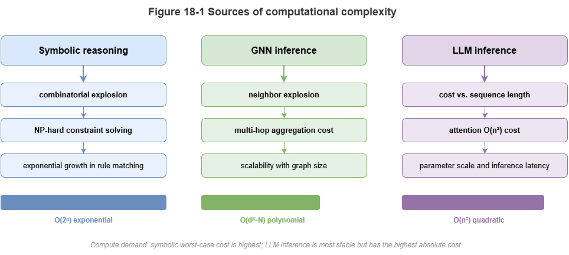
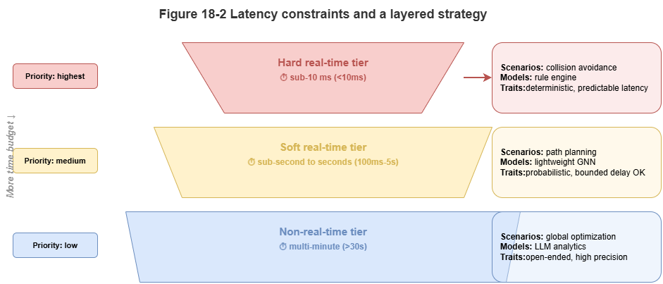
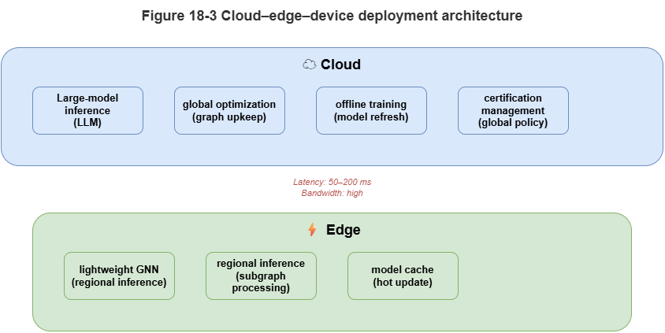

The first five parts of this book built a full algorithmic path from knowledge-graph foundations and static–dynamic hybrid reasoning to trustworthy certification. In theory, neuro-symbolic systems unite deep perception with symbolic rigor. Deploying this stack at city-scale UAM immediately hits a hard physical wall: the compute and latency gap.
As the opening of Part VI (“System Foundations”), this chapter moves from pure theory to engineering reality: sources of computational complexity in neuro-symbolic reasoning and why tiered deployment is necessary to cross the gap.
18.1 Complexity in Symbolic, Graph, and LLM Reasoning#
Neuro-symbolic stacks combine three paradigms, each with characteristic costs:
Symbolic reasoning (combinatorial explosion): Datalog-style inference, ontology consistency, etc., reduce to discrete search or SAT. As rules and ABox grow, complexity can explode exponentially; multi-agent conflict resolution rarely admits cheap exact solutions.
GNNs (neighborhood explosion and memory walls): Message passing on dense low-altitude traffic graphs can cause neighborhood explosion—deep layers may effectively touch most of the graph, stressing memory bandwidth and random access.
LLMs (autoregressive latency): Layer-2 compliance and explanation lean on huge matrix multiplies and serial token generation; time-to-first-token and per-output-token latency are often hundreds of milliseconds to seconds—unsuitable for low-level flight control.
18.2 Latency Constraints in Real-Time Systems#
Low-altitude traffic is a cyber-physical system; vehicle speeds and separation requirements impose hard deadlines.
Hard real time: Bottom-layer collision avoidance and emergency maneuvers (e.g., onboard radar horizon) may require end-to-end latencies on the order of tens of milliseconds (for example, under 50 ms) from sensing to command. Late correct answers are failures.
Soft real time: Route replanning, weather avoidance, multi-vehicle coordination—often 1–3 s tolerable.
Non-real-time: Post-hoc audit, pre-flight static approval, long-horizon optimization—minutes acceptable.
Monolithic neuro-symbolic prototypes often need seconds per inference—far from hard real-time needs.
18.3 Concurrency Pressure at City Scale#
Beyond per-task latency, throughput matters when thousands or tens of thousands of logistics, inspection, and eVTOL vehicles operate simultaneously, telemetry at 1–10 Hz:
High-frequency graph updates: TKGs must absorb massive per-second edge and attribute churn.
\(O(N^2)\) pairwise load: Global all-pairs conflict and rule checks can reach hundreds of millions of operations per second.
Bandwidth: Shipping all raw sensing to a central cloud saturates urban 5G/backhaul.
18.4 From Algorithmic Optimality to System Viability#
We must shift from “best model on paper” to “deployable system.” Accuracy, latency, and throughput form a tension triangle requiring deliberate trade-offs:
Compression and distillation: Avoid billion-parameter LLMs and heavy solvers at the edge; teacher–student distillation into small MLPs or shallow GCNs.
Approximation and heuristic pruning: For graph search and rules, abandon global optima when time is unbounded; deliver feasible, safe suboptimal plans in bounded time.
Compute–memory engineering: Operator fusion, KV-cache tuning, graph partitioning to exploit GPU/NPU throughput.
18.5 Why the Reasoning Stack Must Be Tiered#
Collapsing the full neuro-symbolic stack onto one node fails. The viable pattern is spatiotemporal divide-and-conquer and compute push-down in a device–edge–cloud collaboration:
Cloud: Abundant compute, higher latency. Host global SkyKG, LLMs, heavy symbolic solvers; offline regulation compilation, strategic routing, training, post-incident audit.
Edge / MEC: Mid compute, low latency. Regional TKGs, GNNs, local coordination—multi-vehicle deconfliction and second-scale congestion management.
Device / UAV: Severe limits, strictest real time. Lightweight perception and hard-coded physical safety rules—last line of defense when links fail or edge/cloud degrade.
Scattering LLMs, graph models, and rules across tiers bridges theory and practice. Later chapters detail cloud–edge design and distributed orchestration.
Chapter Summary#
This chapter framed neuro-symbolic complexity vs. the computing gap: combinatorial symbolic cost, GNN neighborhood explosion, LLM autoregressive delay; CPS latency classes; city-scale throughput and bandwidth; engineering shifts toward distillation, approximation, and hardware-aware optimization; and tiered device–edge–cloud deployment as the structural response.
Key Concepts#
Computing gap: Mismatch between model complexity and deployable compute/latency.
Neighborhood explosion: Message-passing cost/memory blow-up on dense graphs.
Hard real-time constraint: Missing a deadline constitutes failure.
System-viability mindset: Prioritize runnable, scalable, maintainable stacks over single-point optimality.
Tiered deployment: Splitting the stack across device, edge, and cloud by temporal criticality.
Exercises#
Why is city-scale UAM constrained by latency and throughput together, not accuracy alone?
How do symbolic, graph, and LLM reasoning differ in sources of complexity?
If some reasoning must live on the vehicle, which capabilities are best kept there?
Case Study#
Peak concurrency with ~1000 UAVs: simultaneous trajectory updates stress global conflict detection, local graph inference, and cloud explanation—motivating edge offload, approximate solving, and distilled models as prerequisites for viability.
Figure Suggestions#
Figure 18-1: Three complexity sources—symbolic, GNN, LLM.

Figure 18-2: Hard vs. soft vs. non-real-time latency budgets.

Figure 18-3: Tiered device–edge–cloud deployment and latency allocation.

Formula Index#
Conceptual chapter; no unified derivations.
Index: latency, throughput, neighborhood explosion, combinatorial explosion, latency budget, tiered deployment.
References#
Alon, U., & Yahav, E. (2021). On the Bottleneck of Graph Neural Networks and its Practical Implications. International Conference on Learning Representations (ICLR).
Han, S., Mao, H., & Dally, W. J. (2016). Deep Compression: Compressing Deep Neural Networks with Pruning, Trained Quantization and Huffman Coding. International Conference on Learning Representations (ICLR).
Hinton, G., Vinyals, O., & Dean, J. (2015). Distilling the Knowledge in a Neural Network. arXiv preprint arXiv:1503.02531.
Jouppi, N. P., et al. (2017). In-Datacenter Performance Analysis of a Tensor Processing Unit. Proceedings of the 44th Annual International Symposium on Computer Architecture (ISCA).
Sze, V., Chen, Y.-H., Yang, T.-J., & Emer, J. S. (2017). Efficient Processing of Deep Neural Networks: A Tutorial and Survey. Proceedings of the IEEE, 105(12), 2295–2329.